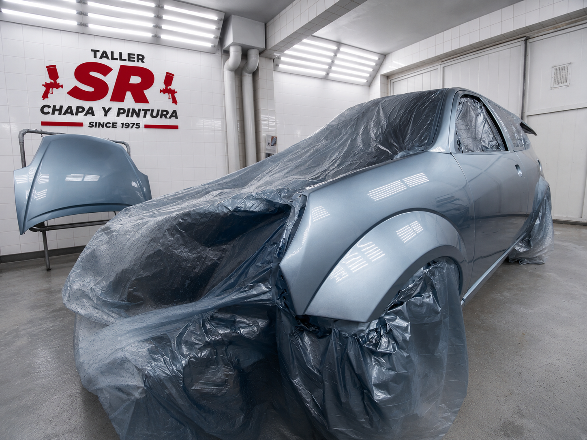
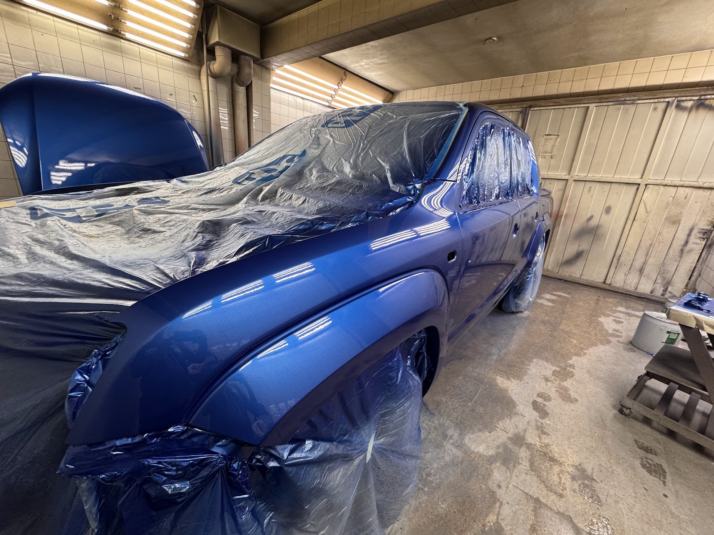
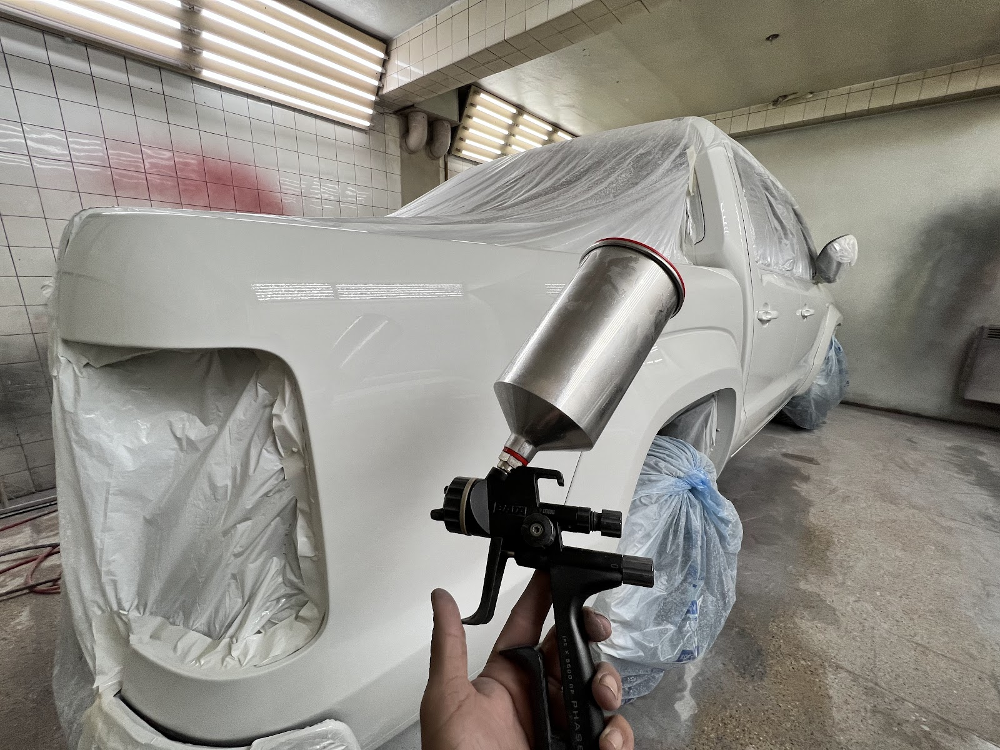

Placa de taller desde 1975
El taller que arregla autos en Córdoba desde 1975
Taller SR. Chapa y pintura trabaja en el mismo barrio desde 1975, con 4.8 sobre 5 en 188 reseñas y una cabina de pintura que se ve en cada trabajo terminado.
“César was fantastic—professional, helpful, and honest. The job was completed within the promised timeframe.”
Saurabh Khanvilkar
Cómo se evalúa un golpe
Chapa, pintura y un criterio de terminación
La consulta se ordena por lo que muestran las fotos del daño, no por una lista de precios inventada.
Evaluación del daño
Zona afectada y alcance real
Terminación y color
Ajuste sobre el vehículo real
Abrillantado final
Mencionado en reseñas de clientes
Con fotos del golpe
Primer paso antes de coordinar turno
Clientes reales
La confianza cruza el idioma
Tres reseñas públicas, una de ellas en inglés, coinciden en lo mismo: trabajo prolijo y trato honesto.
“César was fantastic—professional, helpful, and honest. The job was completed within the promised timeframe.”
Saurabh Khanvilkar
“Me dejaron como nuevo el parachoques y hasta una limpieza incluida que parece un espejo del brillo.”
Jeziel Ruani
“Realizaron un trabajo excelente, quedó prácticamente imperceptible.”
Maximiliano Ocampo
La cabina, no el catálogo
Tres autos, tres etapas del mismo oficio
Preparación, pintura y pulverizado: el trabajo real dentro de la cabina blanca del taller.


De la consulta al turno
Cuatro pasos, sin vueltas
El usuario sabe qué mandar, qué se confirma y cómo sigue el proceso.
- 01
Enviar fotos
Golpe, lateral afectado o detalle de pintura
- 02
Separar alcance
Se define si requiere visita o presupuesto
- 03
Coordinar turno
Lunes a viernes, 8 a 18
- 04
Retirar con criterio
Terminación evaluada antes de entregar
Consultá con fotos del golpe
Fotos, alcance y turno.
Juan de Santiso y Moscoso 760, X5000 Córdoba, Argentina. Lunes a viernes de 8:00 a 18:00. Sábado y domingo cerrado.